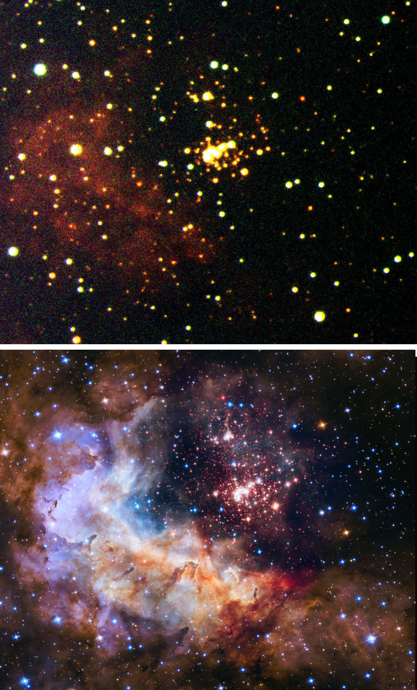
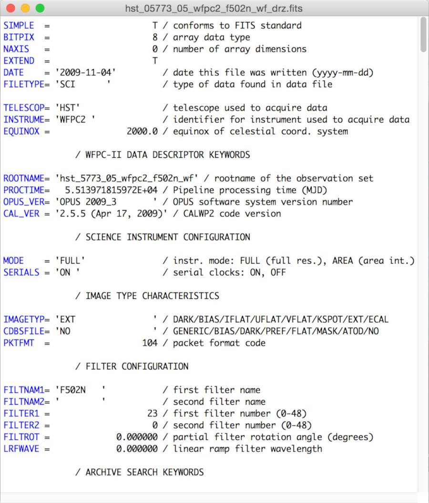
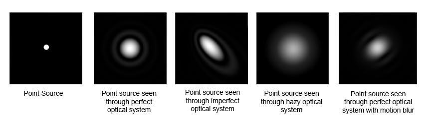
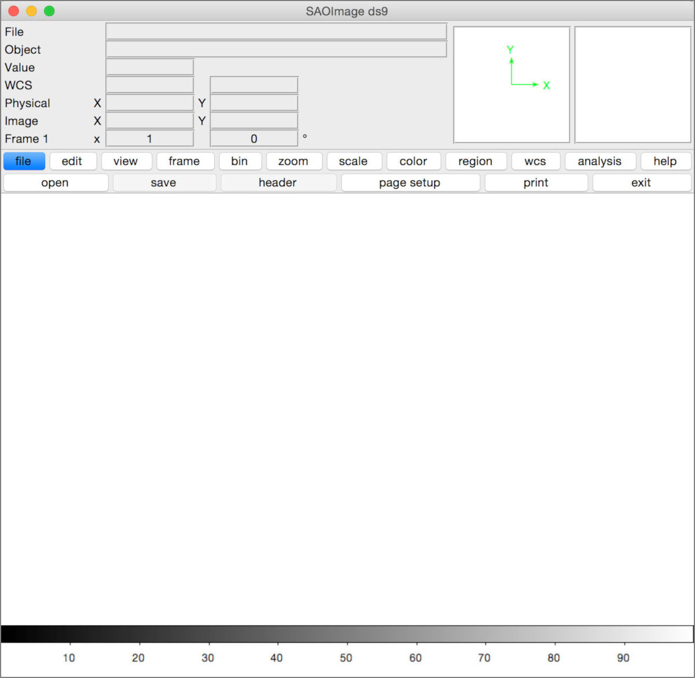
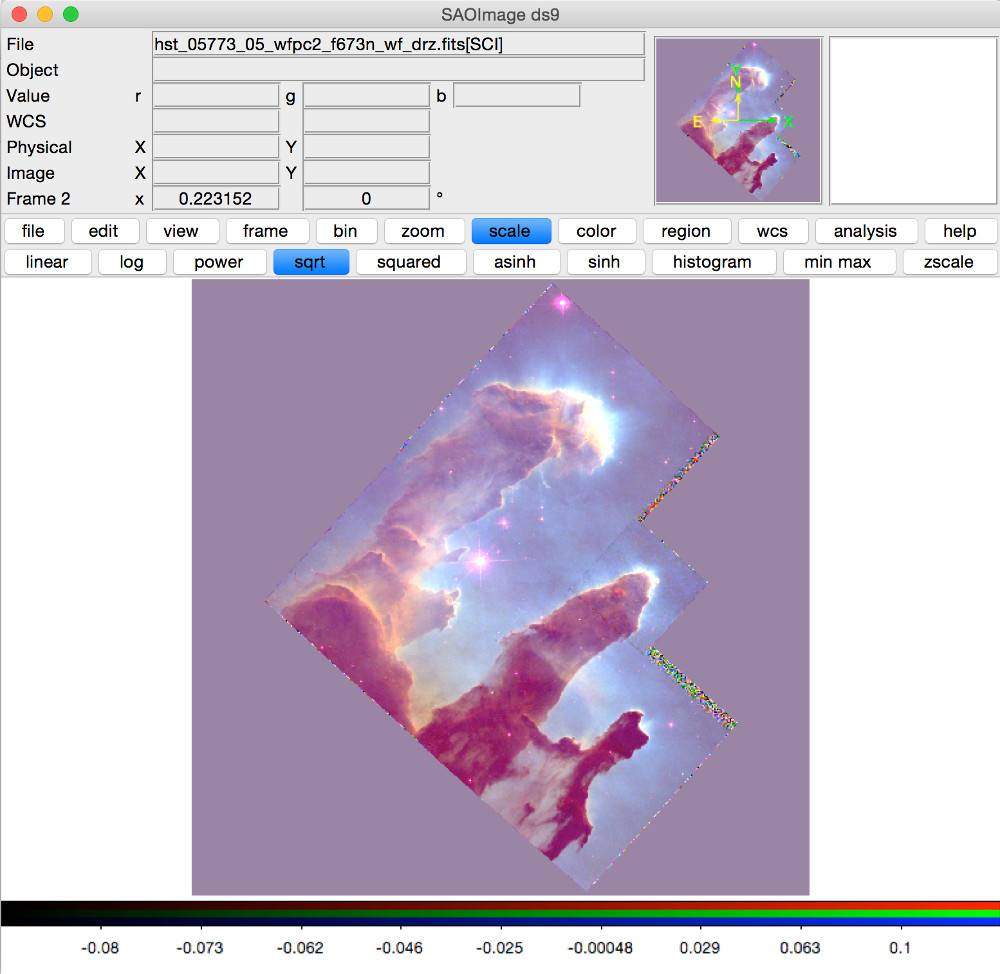

Data Types, Images, and Basic Tools
By the end of this lecture, you will be able to:
Important
Digital data analysis skills are now essential for modern astronomers
Scale of modern surveys:
Observational Data:
Simulation Data:
Application Software:
Programming Languages:
Tip
Strategy: Start with applications, move to programming for research
The Challenge:
The Reality:
This Course Uses:
Why Python is used in the source article?
# Example pixel coordinate
# Bottom-left pixel: (1,1) in FITS convention
# Sky coordinates: RA/Dec (like longitude/latitude)
Example: Hubble image of star cluster Westerlund 2
FITS = Flexible Image Transport System
Basic Components:
Key Features:
Header Information:
Common Keywords:
OBJECT = Target name
DATE-OBS = Observation date
EXPTIME = Exposure time (sec)
FILTER = Filter used
TELESCOP = Telescope name Example: FITS header showing telescope, instrument, and observation details
The Problem:
Why this matters:

Stars appear as disks due to atmospheric seeing and telescope diffraction
Typical PSF size:
Photon noise (fundamental limit)
Electronic noise
Cosmic rays (space telescopes)
Tip
Signal-to-noise ratio improves as √(exposure time × telescope area)
Essential corrections to raw images:
Warning
These steps are essential - raw astronomical images are not science-ready!
Let’s get started with real data!
Download DS9: http://ds9.si.edu/
Install and open the application
Familiarize yourself with the interface:
While installing: Think about what types of astronomical objects you’d like to analyze
Tip
Pro tip: DS9 has extensive documentation and tutorials on their website
How it works:
Information content:
Important
Spectroscopy reveals the physical properties of astronomical objects
Integral Field Spectroscopy (IFS):
Example applications:
The analysis pipeline:
Modern surveys provide:
Histograms:
Scatter plots:
Color-magnitude diagrams:
Statistical analysis:
Main components:
Key concepts: - FITS file format - World Coordinate System (WCS) - Brightness scaling options

Download the famous “Pillars of Creation” data:
Search for: “M16” or use Proposal ID “05773”
Download these files (~53 MB each):
hst_05773_05_wfpc2_f502n_wf_drz.fitshst_05773_05_wfpc2_f656n_wf_drz.fitshst_05773_05_wfpc2_f673n_wf_drz.fitsTasks:

Understanding astronomical coordinates:
Pixel coordinates:
Sky coordinates (WCS):
Practice:
Accessing information:
Key keywords to look for:
OBJECT = Object name
DATE-OBS = Observation date
EXPTIME = Exposure time (seconds)
FILTER = Filter used
TELESCOP = Telescope name
INSTRUME = Instrument nameCoordinate information:
Making the famous Hubble composite:
Warning
This is a false-color image! The filters don’t correspond to true RGB.
Your turn to create the Pillars of Creation!
Steps:
Questions to explore:
Challenge: Can you identify the pillar structures that made this image famous?
Important
Remember: What you see in processed images involves many choices about display and scaling!
Upcoming lectures: - TOPCAT for catalogue analysis
Recommended resources:
Practice suggestions:
AGA0299 - Lab 1 - 2025B